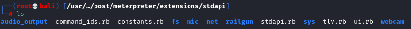
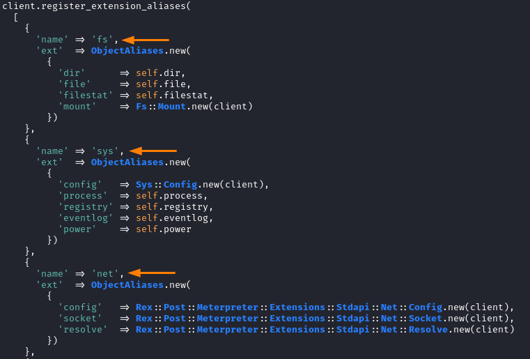
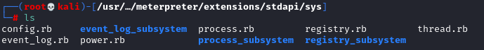
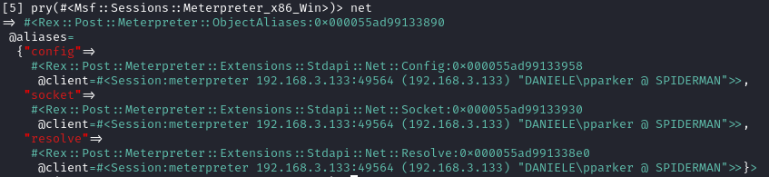

stdapi extensions
/usr/share/metasploit-framework/lib/rex/post/meterpreter/extensions/stdapi

Stdapi is a standard ruby interface to remote entities for meterpreter. It provides basic access to files, network, system, and other properties of the remote machine that are fairly universal.
/usr/share/metasploit-framework/lib/rex/post/meterpreter/extensions/stdapi/stdapi.rb
Alias the following things on the client object so that they can be directly referenced

• fs


• sys


• net

